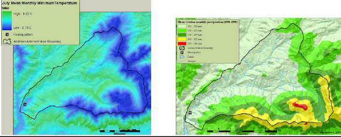
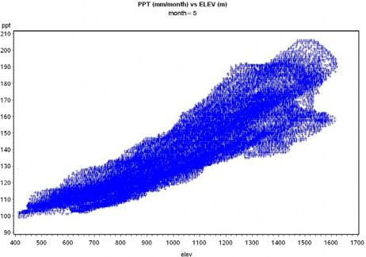
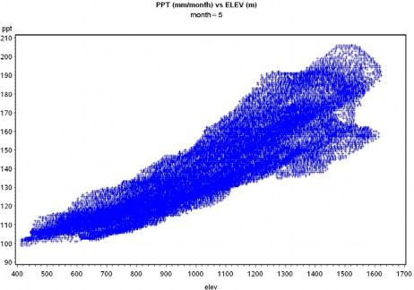
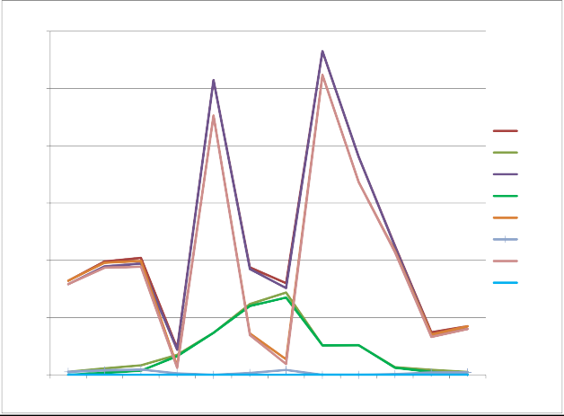
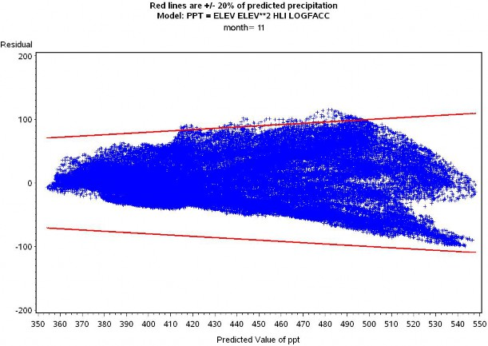
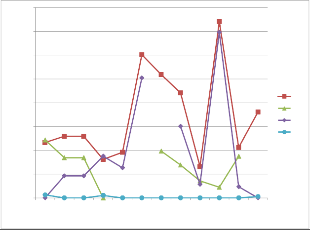
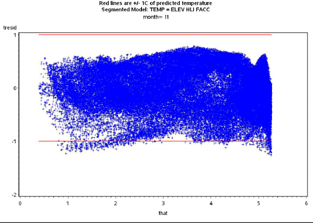
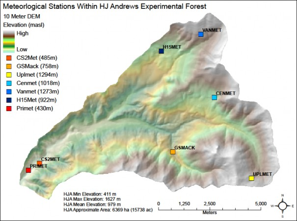
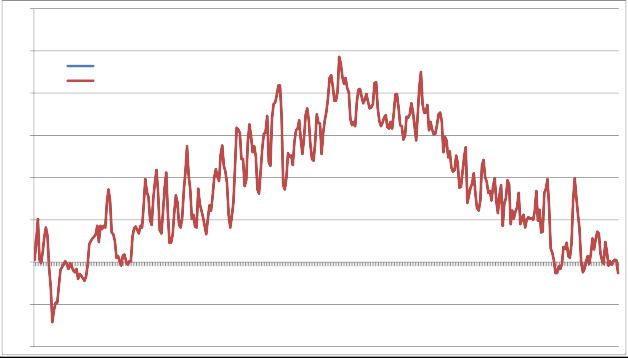

+
Appendix 5: Generating daily temperature and precipitation grids for running VELMA
Introduction
The VELMA model runs at a daily time step on a spatial grid covering the study area of interest. The grid isscalable but is often desired to be at a fairly fine scale of resolution, e.g., 30-m cells. The model requiresdaily values of precipitation and mean temperature for each cell. Historic daily temperature and precipitationrecords can be obtained from weather stations in the National Weather Service or other networks. A simplisticapproach would be to assign temperature and precipitation values to each cell equal to those at the nearestweather station (Thiessen polygons). However, this would lead to a very “blocky” spatial data set with sharpdiscontinuities along lines equidistant from two weather stations.
Smoother surfaces could be obtained by using algorithms such as inverse distance weighting to calculate valuesfor each cell depending on their distance from multiple weather stations. Both of these approaches ignorespatial variation in weather variables that are related to physiographic characteristics other than distancefrom a data source. Elevation is often a strong driver of both temperature gradients due to adiabatic coolingand precipitation gradients due to orographic effects produced as the rising air cools, lowering itsmoisture-holding capacity and causing precipitation of the excess.
The PRISM model was developed to spatially interpolate climate data from observational networks in a way thataccounts for elevation and other physiographic variables of importance.
Originally developed for precipitation (Daly et al. 1994), it has since been expanded to include temperature as well (Dalyet al. 2008). The model has become the most widely used source of spatial climate data sets in the U.S. and has been extensively used worldwide (Daly and Bryant 2013).
Daily time series of PRISM interpolated temperature and precipitation data are supposed to be available for grids in the conterminous U.S. at a 4-km resolution (PRISM Climate Group 2013; data set AN81d), but as of 3/6/14 this FTP link through the PRISM Climate Group web site (http://prism.oregonstate.edu/) was notfunctional. Even if available, a 4-km grid scale is very coarse compared to the finer scale resolution (e.g.,30-m) often desired for VELMA runs. Daily PRISM time series at higher resolution more suitable for supportingVELMA runs would need to be purchased, which would add significant cost to the application of VELMA to a studyarea. Depending on the number of cells in the study area, reading in daily grids of weather data would alsosignificantly slow down the processing time for VELMA runs as well as greatly increasing the memoryrequirements.
This manual describes an alternative approach for providing VELMA with daily temperature and precipitation datafor each cell in a study grid. The desire is to capture the essence of PRISM's consideration of physiographicfactors, but without (a) the expense of purchasing custom PRISM high- resolution daily time series products, or(b) the processing time and memory requirements that use of these products would entail. The method involvesdeveloping statistical regression relationships between weather variables from PRISM monthly 30-year normal mapsand physiographic factors (elevation, etc.). Those relationships are then applied on a cell-by-cell basis,adjusting for the departure of daily weather values from monthly normals at a reference weather station in thestudy area. The steps involved in developing and applying these regressions are described below, using a VELMAapplication
at the H.J. Andrews Experimental Forest in Oregon (hereafter referred to a HJA) as a specific example. Commentsare also given about how this may vary for other application study sites.
Procedure
1. Choose candidate variables and assemble data
PRISM assumes that elevation is the most important factor in the distribution oftemperature and precipitation, but it also includes effects of a variety of other physiographic variables;these include topographic facet, proximity to coastlines, cold air drainage, and measures of topographiccomplexity (Daly and Bryant 2013). The first step in the regression approach is to choose proxyvariables, for which data are available on a cell-by-cell basis, that are relevant to these physiographicrelationships in PRISM. For the HJA we chose elevation, flow accumulation, and heat loadindex. Flow accumulation (also known as contributing area) is the areaof cells that are upslope of the target cell, into which water would flow. This is commonly used to modelhydrologic routing, but is also relevant to cold air drainage modeled in PRISM. Heat load index is avariable that quantifies the heat load from annual incident solar radiation as a function of slope andaspect (McCune and Keon 2002), which relates to the topographic facets in PRISM. In other study areas,other appropriate variables might include distance from coastline if there is a significant coastal to inlandgradient, or latitude if there is a sizable north to south gradient, for example.
Once these physiographic variables have been selected, adata set must be assembled that includes values for each of the cells in the study area. In the HJA study, a30-m grid was used. A 30-m Digital Elevation Model (DEM) provided the data necessary for elevation andcalculation of flow accumulation and heat index in a Geographic Information System (GIS) for each 30-m gridcell. In addition to physiographic data, PRISM monthly “normals” for temperature and precipitation must beassembled for each cell. On the PRISM web site (http://prism.oregonstate.edu) data sets are freely available for the conterminous United States thatinclude 30-year monthly temperature and precipitation normals for 1981-2010 at resolutions of 800 m and 4 km(PRISM Climate Group 2013). As analternative, for the HJA study we used 50-m resolution PRISM data sets from the HJA web site(http://andrewsforest.oregonstate.edu/) that included monthly normals for totalprecipitation (mm) and daily mean temperature (C; average of daily minimum and daily maximum). The PRISMtemperature data were based on 30 years of weather station observation (1971-2000), but 50-m PRISM precipitationdata were only available at the time for 1981-1989. The monthly normals were rescaled to the 30-m grid, and thisdata set was merged with the 30-m physiographic data set. In summary, for each of 73,331 30-m cells the HJA dataset included:
Jan - Dec monthly normal precipitation (mm/month)
Jan - Dec monthly normal mean temperature (C; average of daily min and max) elevation (m)
flow accumulation (unitless) heat load index (unitless)
Example maps of these HJA data are shown in Fig. 1.
2. Exploratory data analysis
Once the data set has been read in, the distributions of values for the variables should be examined. This servestwo purposes. First, it allows checking to see if all values are in an appropriate range and that there have notbeen any gross data transcription errors. Second, it allows consideration of whether transformations of theoriginal variables might be another choice. In the case of the HJA data,
for example, the flow accumulation variable was found to be very highly right skewed. A log10transformation was used to create an alternative variable for testing in the regression modelfitting.
Correlation coefficients can be calculated between the weather variables (temperature and precipitation) and thephysiographic variables. As expected, and as assumed by PRISM, in the HJA data set this analysis revealed thatthe strongest correlation was with elevation. Plots of temperature and precipitation versus elevation should bemade for each month to see the form of this relationship. For HJA precipitation, this revealed fairly linearpatterns for some months (Fig. 2a), but concave-upwards patterns for other months (Fig. 2b) indicating apossible quadratic relationship with elevation.
Consequently, an elevation2 variable was created for testing alternative regression models. For HJAtemperature, there was a linear increase with elevation up to a point, and then a linear decrease with elevation(Fig. 3). This indicated that a spline regression model be used, fitting a piecewise linear model with aninflection point.
3. Regression and model selection
Once the physiographic variables have been selected (step 1), additionalpolynomial terms have been created if indicated (step 2), and alternative transformations have been createdif indicated (step 2), then alternative regression models can be fit for each month and the most appropriatemodel form chosen. Akaike's information criterion (AIC; Akaike 1974) is a widely used statistic tochoose among competing regression models. It represents a compromise between goodness of fit (which increaseswith more parameters) and parsimony (which decreases with more parameters). In practice, ΔAIC values arecomputed as the model AIC value minus the minimum AIC value for all models tested.
While it is possible that different models might have the lowest AIC value for different months, models with ΔAIC< 2 are considered roughly equivalent. For consistency, it is desirable to choose a single model formthat applies for all months and has ΔAIC < 2.
For HJA precipitation, the dependent variable was the mean precipitation for each month, and theindependent variables were elevation (elev), elevation2 (elevsq), heat load index(hli), and log10 of flow accumulation (logfacc). Alternative regression models werefit that included elev and various subsets of the other variables. The full model with all thevariables was selected as the best model; it had ΔAIC = 0 for 8 of the 12 months and <2 for theother 4 months (Fig. 4). The regression parameters are shown in Table 1. The regression residuals fell inside anenvelope of +20% (or better) of the monthly estimates over all months (Fig. 5). Sample SAS codefor generating and comparing the regression models is given in Appendix 5.1, below.
For HJA temperature, the dependent variable was the mean temperature for each month, and the independentvariables were elevation (elev), heat load index (hli), and either flow accumulation (facc)or log10 of flow accumulation (logfacc). Alternative regression models were fit thatincluded elev and various subsets of the other variables. To do the spline fit, anon-linear regression procedure was used (PROC NLIN in SAS) that seeks an iterative solution to the regressionparameters for each of the two linear pieces, as well as the inflection point where they meet. The full modelwith elev, hli, and facc was selected as the best model; it had ΔAIC = 0 for 9 of the 12 months,<2 for 2 months, and 2.6 for the remaining month (Fig. 6). Models incorporating logfacc ratherthan facc failed to converge for several of the months, so facc was used instead. The regressionparameters are shown in Table 2. The regression residuals roughly fell inside an envelope of +1 °C overall months (Fig. 7). Sample SAS code for generating and comparing the regression models is given in Appendix5.2, below.
4. Implementation to get daily temperature and precipitation
The regression models give estimates of the long-term normal monthly mean temperature and precipitation totals ateach cell, based on its elevation, heat load index, and flow accumulation values. (The monthly precipitationtotals must be divided by the number of days in the month to translate this to a daily basis.) However, manyVELMA applications seek to do simulations based on historic daily
weather time series, or even on future scenarios of daily weather time series (adding projected temperature andprecipitation changes to historic weather time series, for example).
One mechanism to translate the regression temperature and precipitation monthly estimates into daily time seriesfor each cell is to adjust the values using daily deviations from the monthly normals for a reference weatherstation in the study area. Essentially, this assumes that the daily deviations from climate normals are the sameacross the entire study area. For the HJA study, the PRIMET weather station was used as the reference (Fig. 8).(For future development, methods to use several reference weather stations might be explored, e.g., usinginverse distance weighting to determine the deviations to apply to each cell in the study area.) Using the HJAexample, the steps for this procedure were as follows:
- Compute expected daily PRIMET temperature (T) and precipitation (P) using the regression equations forthat month, and the elev, hli, and facc values for the PRIMET location. (Divide the monthlyP total estimates by the number of days in the month to get the daily estimate; this is not necessary fortemperature.)
- Using the observed daily PRIMET T and P values, compute T and P deviations (observed - expected).
- Compute expected T and P values for all other cells using their elev, hli, and faccvalues.
- Add the PRIMET T and P deviations to the expected values for all cells.
- Using P as an example:
- Subscript 0 denotes PRIMET, x denotes other location, m denotes month, ndaysm denotes number of days inmonth m, exp denotes expected value from regression
- P0 = observed P at PRIMET for a day in month m
- P0,exp = (am + bm*elev0 + cm*elevsq0+ dm*hli0 + em*logfacc0) / ndaysm Δ = P0 - P0,exp
- Px' = Px,exp + Δ
- \= (am + bm*elevx + cm*elevsqx +dm*hlix + em*logfaccx) / ndaysm + Δ
A test was done to make sure the adjustment was working correctly in the VELMA code by focusing on the 30-m cellin which PRIMET was located. For each day in 2007, the expected daily precipitation and temperature werecalculated from the regression equations and then adjusted following the procedure above. As expected, theadjusted simulated results for PRIMET were identical to the observed precipitation and temperature data,indicating that the code correctly implemented these procedures (Fig. 9).


Fig. 1 - Example maps of H.J. Andrew Experimental Forest PRISM climate and physiographic variables.
 

Fig. 2 - Plots of monthly mean precipitation (mm) versus elevation for H.J. Andrews Experimental Forest. (a)November data, showing more or less linear increase. (b) May data, showing a quadratic increase.

Fig. 3 - Plots of monthly mean temperature (C) for November versus elevation for H.J. Andrews ExperimentalForest. Note the piecewise linear relationship, with an inflection point at around 700 m elevation.
Fig. 4 - Plot of ΔAIC over all months for alternative precipitation regression models at H.J. AndrewsExperimental Forest. E = elevation, E2 = elevation2, H = heat load index, F = log10 of flowaccumulation.
Fig. 5 - Graph of November precipitation regression residuals versus predicted precipitation at H.J. AndrewsExperimental Forest. Red bounding lines represent +20% of the monthly precipitation estimate.
Fig. 6 - Plot of ΔAIC over all months for alternative temperature regression models at H.J. Andrews ExperimentalForest. E = elevation, H = heat load index, F = flow accumulation.
Fig. 7 - Graph of November mean temperature regression residuals versus predicted precipitation at H.J. AndrewsExperimental Forest. Red bounding lines represent +1 °C.
Fig. 8 - Map of weather station locations at the H.J. Andrews Experimental Forest.
Fig. 9 - Comparison of observed H.J. Andrews Experimental Forest PRIMET weather station daily mean temperaturefor 2007 and VELMA simulated data for the same location. The VELMA simulated data used the temperatureregression equation to estimate monthly normal temperature for the cell containing PRIMET, and then madeadjustments based on the observed PRIMET daily mean temperature. This is a check to make sure that theimplementation of the temperature regression and adjustment is working correctly, as indicated by thecoincidence of the blue and red lines (red is on top).
| Month | a | b | c | d | e |
| 1 | 259.751 | 0.011833 | 5.24E-05 | -3.94717 | -0.09685 |
| 2 | 241.5404 | 0.006131 | 6.1E-05 | -5.15183 | 0.892817 |
| 3 | 210.8037 | 0.037236 | 4.62E-05 | -4.20577 | 0.951439 |
| 4 | 96.40946 | 0.080534 | 7.44E-06 | -1.44569 | 1.250961 |
| 5 | 88.34944 | 0.014202 | 3.06E-05 | -0.20094 | 1.259266 |
| 6 | 53.51838 | 0.048195 | 9.53E-06 | 0.873204 | 1.297879 |
| 7 | 13.08702 | 0.023576 | 2.49E-06 | 0.686924 | 0.685529 |
| 8 | 21.89397 | 7.78E-05 | 6.23E-06 | -0.00893 | 0.199088 |
| 9 | 70.03036 | 0.007598 | 2.39E-05 | -0.00868 | 0.959202 |
| 10 | 124.4332 | -0.00302 | 3.59E-05 | -1.16562 | 0.890761 |
| 11 | 316.075 | 0.072349 | 4.32E-05 | -4.40543 | 1.247633 |
| 12 | 290.7049 | 0.034712 | 4.62E-05 | -4.46288 | 0.495517 |
Table 1. Monthly mean precipitation regression model coefficients based on PRISM data for 30-m cells in the H. J. Andrews Experimental Forest. The models are of the form:
P = a + b*elev + c*elevsq + d*hli + e*logfacc
P in mm/month, elev in m, elevsq in m2, hli is unitless, logfacc is
| Month | b | c | d | e | g | h | i | j | x |
| 1 | 0.007047 | 0.018444 | 2.75E-06 | -1.12696 | -0.00434 | 0.012177 | -1.6E-05 | 6.606466 | 679.15 |
| 2 | 0.006148 | 0.065628 | 2.76E-06 | 1.024448 | -0.00545 | 0.037565 | -1.5E-05 | 8.958362 | 684.28 |
| 3 | 0.001492 | 0.041412 | 1.47E-06 | 5.402304 | -0.00656 | 0.039723 | -5.7E-06 | 11.03547 | 699.67 |
| 4 | -0.00239 | 0.053357 | 2.53E-07 | 10.24696 | -0.00697 | 0.043574 | 6.13E-06 | 13.99039 | 818.03 |
| 5 | 0.004219 | 0.059169 | 1.86E-06 | 8.916032 | -0.00707 | 0.056038 | -1.2E-05 | 16.80074 | 698.66 |
| 6 | -0.00222 | 0.046785 | -1.3E-06 | 16.98087 | -0.00684 | 0.078366 | 1.33E-05 | 20.81386 | 827.75 |
| 7 | -0.00123 | 0.004955 | -2.5E-06 | 19.38073 | -0.00633 | 0.073345 | -1.9E-06 | 23.54351 | 814.57 |
| 8 | -0.00023 | 0.00407 | -2.6E-06 | 18.81907 | -0.00585 | 0.007047 | 9.03E-06 | 23.53079 | 836.26 |
| 9 | 0.001476 | -0.0342 | -2.3E-06 | 14.80655 | -0.00612 | 0.047614 | 7.6E-06 | 20.83291 | 791.89 |
| 10 | -0.00023 | 0.018716 | -1.2E-06 | 11.70249 | -0.00641 | 0.112236 | -8.6E-06 | 16.77907 | 819.27 |
| 11 | 0.002002 | 0.014029 | -2.6E-07 | 3.771477 | -0.00556 | 0.027117 | -1.4E-05 | 9.412401 | 745.95 |
| 12 | 0.00697 | 0.047469 | 2.59E-06 | -1.28579 | -0.00399 | 0.007256 | -1.7E-05 | 6.096779 | 674.34 |
Table 2. Monthly mean temperature regression model coefficients based on PRISM data for 30-m cells in the H. J. Andrews Experimental Forest. The models are of the form:
For elev < x: T = b*elev + c*hli + d*facc + e
For elev > x: T = g*elev + h*hli + i*facc + j
T is in °C, elev in m, hli is unitless, facc is unitless
References
- Akaike H (1974) A new look at the statistical model identification. IEEE Transactions on Automatic Control 19:716-723
- Daly C, Bryant K (2013) The PRISM Climate and Weather System - An Introduction. In. PRISM Climate Group, Oregon State University, Corvallis, Oregon, http://prism.oregonstate.edu/documents/PRISM_history_jun2013.pdf
- Daly C, Halbleib M, Smith JI et al. (2008) Physiographically sensitive mapping of climatological temperature and precipitation across the conterminous United States. International Journal of Climatology 28:2031-2064
- Daly C, Neilson RP, Phillips DL (1994) A statistical-topographic model for mapping climatological precipitation over mountainous terrain. Journal of Applied Meteorology 33:140-158
- McCune B, Keon D (2002) Equations for potential annual direct incident radiation and heat load. Journal of Vegetation Science 13:603-606
- PRISM Climate Group (2013) Descriptions of PRISM Spatial Climate Datasets for the Conterminous United States. In. PRISM Climate Group, Oregon State University, Corvallis, Oregon, http://prism.oregonstate.edu/documents/PRISM_history_jun2013.pdf
Appendix 5.1 - Sample SAS code for generating and comparing monthly total precipitation regression models at H.J. Andrews Experimental Forest.
proc reg data=hja.hja outest=parmout; by month; model ppt = elev elevsq hli logfacc / selection=cp aic; output out=pptout p=phat r=presid;
Notes:
- The input data are read in from the file 'hja' in the SAS library (folder) 'hja'.
- Separate models are fit for each month.
- With the 'selection' option, models are fit using all the various sets of independent variables listed.
- By using the 'aic' option, Akaike Information Criterion (AIC) values are given in the output for each model. This allows calculation of ΔAIC compared to the model with the lowest AIC value (Fig. 4).
- The parameter estimates for each model are written to the file 'parmout' (Table 1).
- Predicted estimates ('phat') and residuals ('presid') are written to the file 'pptout' for plotting residuals vs. predicted values (Fig. 5).
Appendix 5.2 - Sample SAS code for generating and comparing monthly temperature regression models at H.J. Andrews Experimental Forest.
TEMP MODEL WITH ELEV, HLI, FACC. BEST MODEL - MIN AIC FOR MOST MONTHS, MINIMAL DELTA AIC FOR OTHER MONTHS;Segmented model, linear with elev above and below a join point x;proc nlin data=hja.hja outest=parmout; by month;parms b=0.01 c=0 d=0 e=0 g=-0.005 h=0 i=0j=10; file print;x = ((h-c)*hli + (i-d)*facc + (j-e))/(b-g); if elev < x then do;model temp = b*elev + c*hli + d*facc + e; der.b = elev;der.c = hli; der.d = facc; der.e = 1;der.g = 0;der.h = 0;der.i = 0;der.j = 0;end; else do;model temp = g*elev + h*hli + i*facc + j; der.b = 0;der.c = 0;der.d = 0;der.e = 0; der.g = elev; der.h = hli; der.i = facc; der.j = 1;end;if _obs_=1 then do; * PRINT X ESTIMATE TO TRACK CONVERGENCE;put x =;end;output out=tempout predicted=that residual=tresid;
Notes:
- The input data are read in from the file 'hja' in the SAS library (folder) 'hja'.
- Separate models are fit for each month.
- This is a spline model, fitting linear models above and below an inflection point at elevation x,which is also estimated. This requires use of an iterative non-linear procedure (PROC NLIN). Unlike PROC REG inAppendix 5.1, this does not have the capability to fit multiple alternative models at once and report the AICvalues for each. Instead, each alternative model must be specified. The above code specifies the full model withelev, hli, and facc. AIC values are not automatically printed and must be calculated fromthe sum of squares error (SSE), number of parameters (p; 4 in this case), and number of sample points (n; 73,331in this case), according to the formula: AIC = n * ln(SSE / n) + 2*p. ΔAIC values are then calculated bysubtracting the AIC for the model with the lowest AIC value (Fig. 6).
- The 'parms' statement specifies starting values for the parameters to begin the iterative search for bestfit.
- x represents the elevation at which the two piecewise linear models meet. To make the overallmodel continuous requires that the estimated temperature must be the same for both piecewise linear models atthat point. The expression for x is derived by setting the two models equal to each other and solving forelev at which they are equal:
b*elev + c*hli + d*facc + e = g*elev + h*hli + i*facc + j
b*elev- g*elev = h*hli - c*hli + i*facc - d*facc + j - e
x = elev = ((h - c)*hli + (I - d)*facc + (j - e))/(b - g)
- The 'der' statements specify the first derivatives of each of the linear models with respect to each of theparameters.
- The parameter estimates for each model are written to the file 'parmout' (Table 2).
- Predicted estimates ('that') and residuals ('tresid') are written to the file 'tempout' for plotting residualsvs. predicted values (Fig. 7).